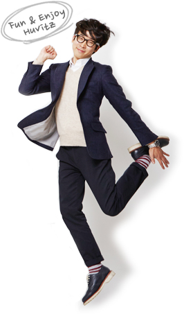

Enjoy Huvitz
정년 60세까지 고용조정 없는 HUVITZ의 복리후생은 본인과 가족의 건강을 위한 의료복지와 체육시설, 안마사 운영 등을 하고 있으며, 자녀의 학업을 위한 학자금지원, 생활안정을 위한 사내복지기금 지원, 젊은 사원들을 위한 기숙사 운영, 여가를 위한 휴가지원 등 수많은 복리정책을 꾸준히 개발하고 지원합니다.
-
- 4대보험
- 국민연금, 건강, 고용, 산재보험 등 법정보험을 지원합니다.
-

- 건강검진 :
- 매년 7월에 전임직원을 대상으로 회사내에서 의사와 간호사가 내방하여 종합건강검진을 실시
- 건강상담 :
- 정기적으로 매월 중순에 의사와 간호사가 내방하여 직원들의 건강을 체크하고 상담(혈압, 비만도, 소화기관, 관절, 두통 등 다양한 분야)
- 본인의료비지원 :
- 의료보험 한에서 1백만원 초과시 2백만원까지 지원
- 가족의료비지원 :
- 의료보험 한에서 2백만원 초과시 3백만원까지 지원
- 부부의료비지원 :
- 격년으로 40세 이상 직원과 배우자에게 80만원 한도 내에서 건강에 관련한 보약, 진찰, 검진 등 의료비를 지원
-
임직원의 생활안정을 위하여 저리로 대출 해 주며, 대출내용은 주택자금, 생활자금(병원비, 결혼/장례비, 자녀양육비), 구제자금(재해, 인재사고에 의한 자금)의 용도로 지원
-
- 취학전자녀학자금 :
- 초등학교 입학전 자녀로서 5세 부터 7세까지 매월 지원
- 자녀등록금 :
- 고등학생, 대학생에 대하여 전액지원
- 본인학자금 :
- 의료보험 한에서 1백만원 초과시 2백만원까지 지원
-
원거리 거주자에 한하여 회사 근처에 있는 아파트를 제공하여 출퇴근의 피로를 해소하고자 기숙사를 운영하고 있으며, 아파트 한채당 방 3개로 구성되어 있고 2인 1실을 사용하도록 하여 소통의 장으로도 활용하고 있음.
-
휴비츠 복지시설복지시설 더보기
-
- 경조사비
- 본인, 본인 가족, 배우자 가족과 관련한 경조사(결혼, 회갑, 칠순, 사망 등) 발생시 경조휴가, 경조금, 화환/조화 등을 지원합니다.
-
- Refresh 휴가
- 근속연수 매 5년마다 가산하여 포상휴가 및 휴가비를 지급합니다.
-
- 휴가/휴가비
- 입사 후 15일의 유급휴가를 부여하고, 4일간의 여름정기휴가와 휴가비도 지원합니다.
-
- 콘도
- 대명리조트(전국 11개 지점 등)는 회원가에 이용가능할 뿐만 아니라, 오션월드 등 부대시설도 40% 할인을 받을 수 있습니다.
-
- 식사제공
- 임직원의 건강을 위하여 영양가 높은 음식을 사내식당에서 조식, 중식, 석식을 무료로 지원합니다.
-
- 기념일
- 결혼기념일/생일 시 축하금 지원, 복날 닭백숙 배달, 피자데이, 빼빼로데이, CEO와의 소통데이, 신입사원 환영회, 가족초청행사, 어린이날 자녀선물, 입학자녀에 대한 학용품 지원, 입사시 부모님께 축하꽃바구니 배송, 명절 선물 등을 지원합니다.
-
- 교육비
- 직무/직급 교육비의 전액지원과 영어, 중국어, 일본어 사내 원어민 강사를 통한 어학, 외부 어학 학원비를 지원합니다.
-
- 동호회
- 반디회(봉사단체), 스쿼시, 헬스, 당구, 볼링, 낚시, 등산, 트레킹, 기타(악기), 축구 등 건전한 체육, 취미 활동을 지원합니다.
-
- 주말농장
- 회사인근에 최대 10평까지 토지임대 및 모종, 씨앗을 제공하여 주말에 가족들과 농사를 지을 수 있도록 지원합니다.
-
- 업무보조비
- 대외 활동이 많은 특정 부서에 한하여 통신비를 매월 지급하고, 외근시 사고를 대비하여 운전자보험 가입을 지원하며, 산업재해를 대비하여 상해보험도 가입/지원합니다.
-
- 사내행사
- 전사/팀별 야유회 및 문화공연(부천 소사필오케스트라) 관람을 지원합니다.
Fun Company HUVITZ는 “눈 뜨면 출근하고 싶어지는 휴비츠”를 만들기 위해 대리 이하의 직원들이 모인 행복단체입니다. WORK SMART에 대한 임직원들의 의견 및 아이디어를 발굴하여 “즐거운 직장 만들기” 활동을 전개해 나아가고 있으며, 각종 행사(야유회, 가족행사), 맨토링, 이벤트, CEO의 소통역할 등 다방면의 활동으로 즐겁고 행복한 직장을 만들기 위해 활동하고 있습니다.
총10개 동호회로 구성되어 있으고, 매월 즐거운 활동을 할 수 있도록 회사에서 동호회비를 지원하고 있으며, 동호회는 반디회(봉사반체), 스쿼시, 헬스, 당구, 볼링, 낚시, 등산, 트레킹, 기타(악기), 축구가 활동하고 있습니다.
즐거운 직장 휴비츠 동호회!매월 즐거운 활동을 할 수 있도록 회사에서 동호회비를 지원하고 있습니다.
-
봉사단체
봉사단체 동호회인 “반디회”는 독거노인, 불우아동, 지방거주노인 등을 대상으로 식사지원 및 아동교육, 문화체험, 백내장 수술, 안경제공 등 의료지원도 아낌없이 지원하고 있는 단체로 활동하고 있습니다.
-
스쿼시
국제규격의 스쿼시장을 갖춘 “START” 동호회는 매일 아침, 점심, 저녁으로 자체강습 및 정기적인 게임을 실시하는 동호회 입니다.
-
헬스
유명 휘트니스 클럽을 벤치마킹하여 가장 적합한 운동 시설을 보유하고 있으며, 새벽 부터 저녁까지 체육시설을 무료로 개방하고 경험이 많은 멤버가 기초 트레이닝을 해주고 있습니다.
-
당구
2005년 시작된 당구 동호회는 매년 3~4 차례의 대회를 통해 직원들간의 친목과 스트레스 해소를 도모하고, 당구의 규칙, 기초 지식, 스트록등 실력을 향상시켜 진정으로 당구를 사랑하고 즐길 줄 아는 동호회입니다.
-
볼링
신입사원들이 가장 선호하는 “H.B.C.”동호회로 매월 1회 활동하고 있으며, 매월 푸짐한 상품으로 즐거움을 배로 만드는 동호회입니다.
-
낚시
협력사와 함께 활동하고 “Hi-Fishing Club” 동호회는 매분기 밀물낚시를 실시하고 있으며 낚시 보다는 생각을 정리하고 친목을 도모하는 점을 중요시 하는 동호회입니다.
-
등산
CEO를 비롯하여 연구소에서 가장 참여가 많은 “오뫼 가뫼” 동호회로 제주도 한라산을 비롯하여 전국 각지의 명산을 두루 정복하는 동호회로 활동하고 있습니다.
-
축구
축구동호회 “카이저”는 휴비츠 30여명과 협력업체를 포함하여 총 50여명이 활동하고 있는 역사 깊은 동호회로 축구를 사랑하는 건강한 직원들의 모임으로 매월 1회 축구경기를 실시하고 있습니다.
-
트레킹
회사 주변의 개천길 또는 올레길을 찾아서 자연을 벗삼아 걷는 “얼반트레킹” 동호회로서 최종 목적지를 맛집으로 정하여 신체와 미각을 즐겁게 하는 동호회입니다.
-
기타(악기)
배우기 쉽고 휴대가 간편하며 노래부르며 연주가 가능한 기타 연주를 통하여 친목을 도모하고, 직장생활의 활력을 불어넣기 위해 개설된 동호회 입니다.